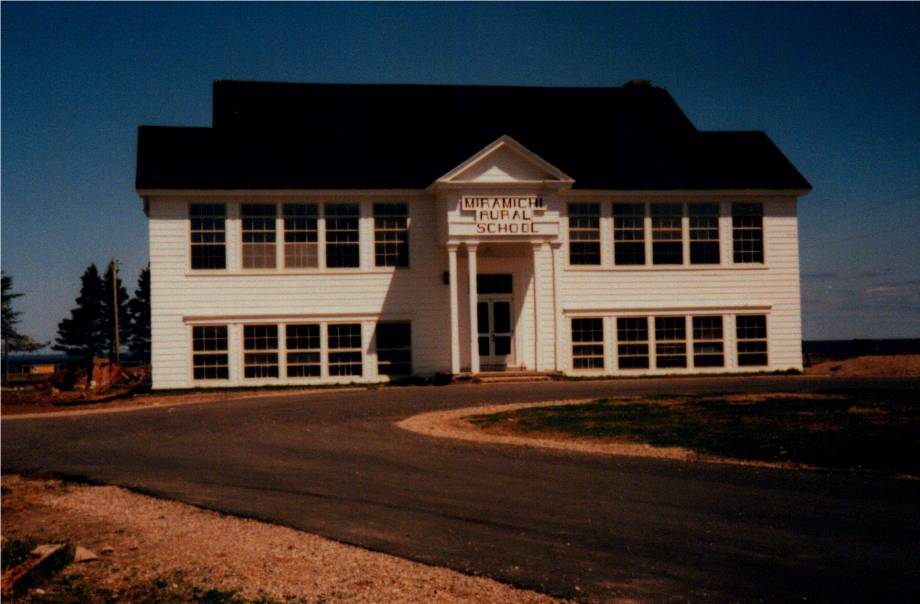

The Family Chronicle
No. 78 September 1, 2004
________________

Undated photo of the Miramichi Rural High School. The school has since been demolished.
MRHS
The Miramichi Rural High School was the first of a new series of rural high schools in New Brunswick; the second school was on Deer Island. Before that, high school classes were offered (for two or three years) in the Bay du Vin Rectory by Rev. Smith. Students from Black River walked or biked to Bay du Vin in good weather and traveled by horse and sled in the winter. Even after MRHS opened, I remember Norman taking a horse and sled to Bay Side picking up fellow students along the way and leaving the horse across the road from the school during the day in Harrison Smith’s barn. Of course, one always carried some hay and oats for the horse while it was stabled.
The school was built, as I recall for $13,000 and opened in January 1940. My first visit to MRHS was late in the fall of 1939 when George Watling and biked down to see it. It was an impressive building for a rural area. As the photo above shows, it was two story with two classrooms on each level at the front and an auditorium on the second floor at the back. At the back on the lower floor were the principal’s office, boys and girls washrooms and the furnace room.
MRHS had electric lights, 32 volt as I recall, operated from a bank of glass-encased batteries and had a small gasoline engine which switched on automatically to charge the batteries. It also had a coal-fired furnace. A very tall flagpole stood in the front yard by the driveway. It looked like a ship’s mast. The pole, not the flag on the pole, had to be raised and lowered using a team of horses.
Initially, MRHS drew its students from the following six one-room schools:
Little Branch,
Victoria,
Cameron (Middle Black River)
Miramichi (Bayside)
Auburnville
Bay du Vin
Other districts were added later.
I believe that I started at MRHS in 1941 and graduated in 1946. There were about 30 of us in Grade 7 but only 11 or 12 graduated.
While visiting Bill Gregan recently, I was reminded about some of the shenanigans (by other students, obviously) while we were at MRHS.
Ken, Norm and I were at the MRHS at the same time. One teacher, perhaps Miss Hetherington, had both Norm and I in her classes. She called Norm “Big Glendenning” and called me “Little Glendenning”.
One trick was to place a paper cup full of water on the top edge of a classroom door. When the door was opened, the cup of water came tumbling down, hopefully on someone’s head.
The boy’s toilet was constructed in such a way that there was a beam across the top of the entry to the section where the stalls were. It was a great place to practice “chinning”.
There a large covered bin in the boy’s washroom was used to store potatoes from the school garden
Perley Quayle was a fine man and a good teacher but also a person who understood student pranks. He had a Model A Coupe which he parked at the east end of the school. We frequently moved it or turned it around.
One morning I missed the bus at the Little Branch corner and had to walk to school – about 3 miles. Of course, I was late. When I stepped into the school, I met Mr. Quayle. I explained what had happened and then quipped “Better late than never” to which he responded ‘Yes, but better never late.”
Lowell Williston had a wooden leg. In the fall of 1939, there was an outbreak of scarlet fever. The school health officer was a Dr. Loggie. When checking to see if people had a rash, one sign of scarlet fever, he would look at their backs, arms or legs. He asked Lowell to pull up his pant leg; Dr. Loggie looked at his leg and pronounced him free of scarlet fever. Lowell had a wooden leg.
In the early years, students were expected to plant school gardens. It seems to me that we were paired and each pair had a small plot. Come fall, the vegetables were canned and kept in the closet under the stairs. I know that some of the boys would sneak into the closet before noon, open a can of beans or whatever, place them inside the sheet metal on top of the furnace to warm and then enjoy them with their lunch.
Perley Quayle brought some of his own equipment to the school for our use. One item was a huge lathe for wood turning. It was operated like a treadle sewing machine. He also set up a blacksmithing area in the coal bin and we learned to work – shaping, welding, annealing, tempering, etc.
High school students now travel to Chatham and new Miramichi Rural School caters to about 80 students in K-8.
MRHS Teachers
Principals of MRHS included:
Rev. Smith 1937
(Started in Bay du Vin)
Mr. Armstrong - 1941-
Mr. Perley Quayle 1942-
Mr. Brown
Teachers
Miss Hetherington
Miss Barnes
Ruth Morrell
Mr. Forcier
Helena Kingston
Additional names welcomed and I will publish an revised list.
The Chronicle is an occasional newsletter prepared by Don Glendenning and posted on the family website. It is designed to share information about my family, community and the times in which I grew up. While every effort is made to be accurate, errors are likely to occur. Comments, enquiries and information may be sent to 62 Queen Elizabeth Drive, Charlottetown, PEI, C1A 3A9. Tel: 902-892-5859 Email: dglende@auracom.com Web: www.glendenning.net